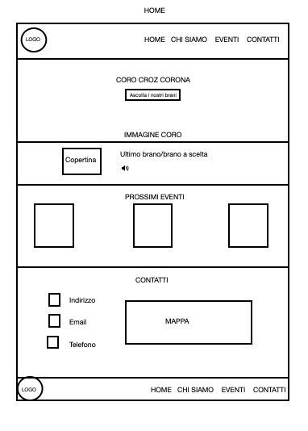
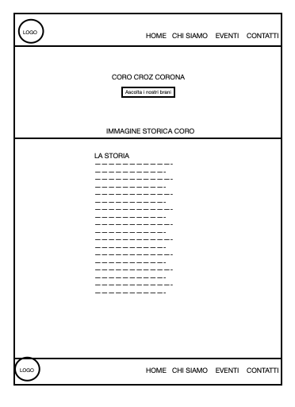

Il sito “CORO CROZ CORONA” è stato creato per far conoscere la bellezza della cultura del canto di montagna. L’obbiettivo è quello di far conoscere al maggior numero di persone la storia passata, quella contemporanea e gli eventi in programma del coro. Si tratta di un sito con un design contemporaneo che si differenzia dagli altri già presenti sul web.
L’obiettivo di questo sito è presentare in chiave moderna uno dei cori più storici del Trentino, facendo conoscere in primis la storia, ma anche i “prossimi concerti”, e un assaggio del tipo di musica del repertorio della coralità di montagna. Viene data la possibilità alle persone di raggiungere facilmente l’app di Spotify dover poter ascoltare parte del repertorio del coro. Un obiettivo misurabile del sito è la possibilità degli utenti di salvare nel loro calendario l'evento, tenendo così monitorata l'interazione con l'utente.
Il target primario riguarda chiunque voglia interessarsi a questo mondo del coro di montagna ma anche agli appassionati i quali possono approfondire la conoscenza del coro ripercorrendone tutta la storia con il testo e con le canzoni.
Per quanto riguarda l’analisi dei competitors, tenendo in considerazione i siti web inerenti al tema della coralità alpina, ho trovato alcuni siti di altri cori che però rispecchiano in pieno l’immagine comune che si ha del coro di montagna, ovvero un ambiente vecchio e senza il minimo interesse alla modernizzazione. Possiamo notare come il sito del coro della SAT (coro alpino più famoso in Italia) abbia un template vecchio con grafiche obsolete ed aspetto poco curato, il sito inoltre non viene aggiornato con le novità periodicamente. Queste caratteristiche sono state riscontrate anche in altri siti di altri cori. Se si da un’occhiata anche ad alcuni cori fuori dal Trentino possiamo notare che i siti hanno le stesse caratteristiche.
Sito coro SAT: https://www.corosat.it/
Sito Corale Alpina Savonese: http://www.coralealpinasavonese.it
Home
Chi siamo

HTML e BOOTSTRAP sono i siti che hanno supportato la progettazione
FLATICON è stato utilizzato per le icone del sito
GITHUB è il servizio di hosting per la pubblicazione on-line di Coro Croz Corona
GOOGLE ANALYTICS per monitorare i risultati finali della diffusione di Coro Croz Corona
GOOGLE FONT per il dowload del font utilizzato nel sito internet
Il sito risulta chiaro e intuitivo, con una buona usabilità, con un design semplice ma accattivante. Il font scelto è il sans-serif perchè è pulito e leggibile, il colore di sfondo è bianco il testo è nero per la semplicità di lettura. Sulla barra del menù in alto lo sfondo è nero ed il testo bianco per lo stesso motivo. All'interno del sito sono stati aggiunti elementi che portano a semplificare la navigazione dell’utente come pulsanti per raggiungere le varie sezioni in cui si suddivide la pagina e far muovere l'utente il più facilmente possibile agevolandolo all'azione in maniera intuitiva. L’utilizzo della retroilluminazione dei bottoni al passaggio del mouse consente di capire in maniera intuitiva dove si incontrano elementi cliccabili, attraverso i quali accedere ad altri contenuti. Per un’esplorazione in maniera semplice e immediata il menù di navigazione è progettato per rimandare a tutte le funzioni principali in cui sono organizzati i contenuti del sito.
Il sito si presenta in chiave moderna rispetto ai competitors, questo lo rende unico nel suo genere, con focus sulla storia del coro e sulla proposta musicale, vi è una parte del sito dedicata ai prossimi eventi così da permettere ai lettori di restare continuamente aggiornati. La home è dedicata più al primo impatto con il coro quindi viene presentata un’immagine dei coristi, l’ultimo pezzo inciso, i prossimi eventi e i contatti. La seconda pagina, “chi siamo”, racconta brevemente la storia del coro iniziata 50 anni fa, è stato scelto di creare una pagina secondaria per permettere a chi fosse interessato di conoscere tutta la storia senza stufare chi invece è di “passaggio” e vuole solo dare una rapida occhiata al sito per farsi un’idea di chi è il Coro Croz Corona.
Il progetto del sito web si prefigge l’obiettivo di far conoscere in primis la coralità trentina di montagna, attraverso il Croz corona, il sito web vuole diventare per l’utente il luogo di riferimento attraverso cui accedere in maniera più diretta a una tipologia specifica di contenuti già presenti su Spotify, e dare la possibilità a chiunque di rimanere sempre aggiornato sulle nuove date dei concerti, potendo salvare l'evento sul proprio calendario personale.
Il target principale di questo sito sono i fan del coro Croz Corona, i quali possono approfondire la conoscenza del coro leggendo la sua storia e potendo rimanere aggiornato dei prossimi concerti, ulteriori target potrebbero essere chi si interessa del canto di montagna, i coristi degli altri cori o chi vuole ospitare il coro ad un evento in particolare. Il messaggio che si vuole trasmettere è quello di un coro unito, giovanile e con una proposta fresca, il quale può presentarsi al mondo in maniera moderna nonostante la maggior parte dei coristi abbiano un’età avanzata.
Il nuovo sito verrà lanciato sui vari social del coro IG,FB. Soprattutto su Facebook visto che il nostro target è presente soprattutto su quest’ultimo social. In futuro, se ci fosse disponibilità di budget, sarebbe bene anche optare per della pubblicità via stampa (volantini e produzione grafica pubblicitaria) e radio (messaggi promozionali radiofonici) così da poter dare al coro più possibilità di essere chimato ad esisbrsi a concerti live.
La valutazione del raggiungimento dell'obbiettivo di visualizzazione del sito di 50 visite é stata possibile grazie all'utilizzo di Google Analytics. È stata inoltre implementata la possibilità di disattivare il traccimento tramite i cookie policy.